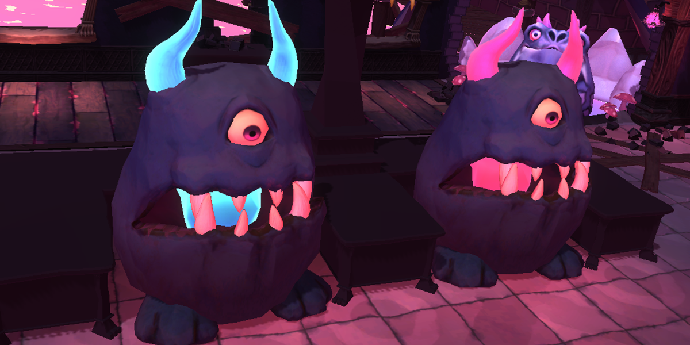

The Devil’s Cookbook
- Programmers
- James Greensill - AI & Systems Programmer | Producer.
- Celeste Soueid - Lead & AI Programmer.
- Alex Manning - Graphics, Systems & Gameplayer Programmer.
- Designers
- Leo Lopez - Game, UX/UI, Level & Mechanics Designer.
- Beau Bardwell - Game, Systems & Level Designer.
- Daniel Bobbi - Game & Level Designer.
- Artists
- Aislinn (Ayvee) Smith - Lead, UI & Character Artist, Narrative Designer.
- Ethan Kyte - Environment Artist & Animator.
- Lara Diego - Concept, Character, Lighting & Environment Artist. Animator/Rigger.
- Anais Robert- Character, Prop, Environment & Texture Artist.
Summary
Goal: Create and Deploy a Full 3D Game in 14 weeks.
Languages Used: C#.
Engine: Unity 3D.
Status: Completed.
Description
The Devil’s Cookbook is a singleplayer 3D top-down survival cooking game in which you’re trapped as the cook in a demonic restaurant where nothing is as it’s supposed to be. The ingredients are alive and the patrons will take a bite out of you if you don’t serve them quickly - you must do whatever you can to survive and complete your shift.
My Contribution
My notable contributions are:
- Automata (AI Architecture)
- AI Prototype
- Water Shader
- Grass Shader
- Player Upgrade System
- Ordering System
- Procedural Eye Tracking
- Prototyping various systems.
Challenges
The biggest challenge that I faced during the development of The Devil’s Cookbook was implementing stable AI. I am primarily a Systems & Architecture programmer, so delving into the world of AI was a new and unexplored topic for me. I developed Automata as an initial solution - though while Automata has a sound architecture, I realised that the AI needed to be State based rather than Automata’s Behaviour Pattern design. To fix this issue, I set aside the Automata system and quickly developed a State Machine architecture to get us through Alpha & Beta. This was was iterated upon by Celeste Souied to create the game’s current AI system.
Media
